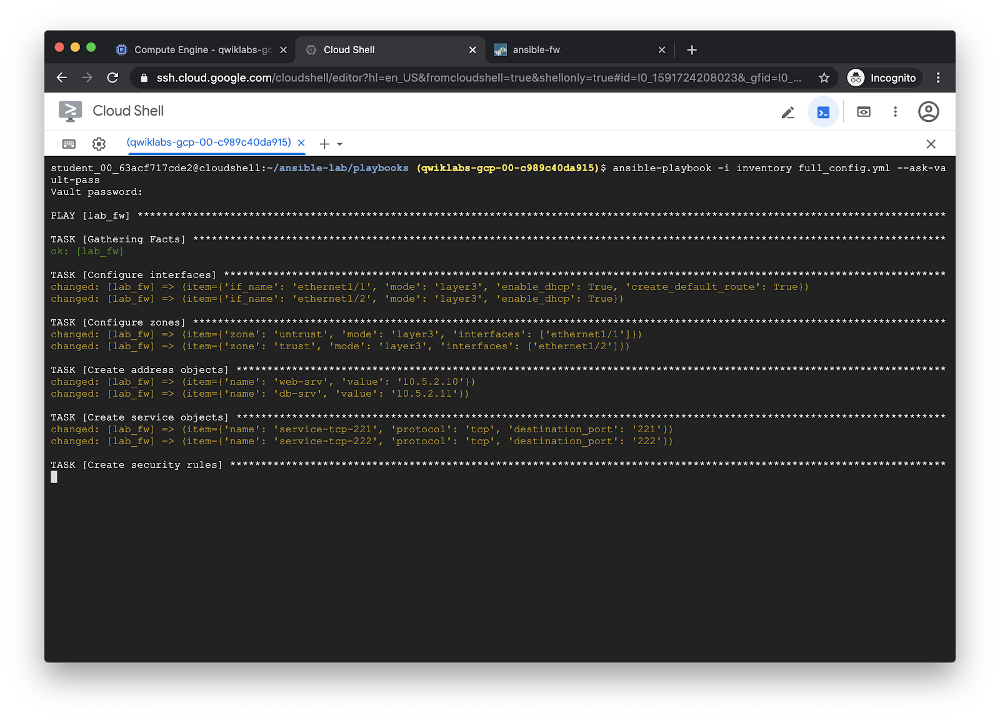
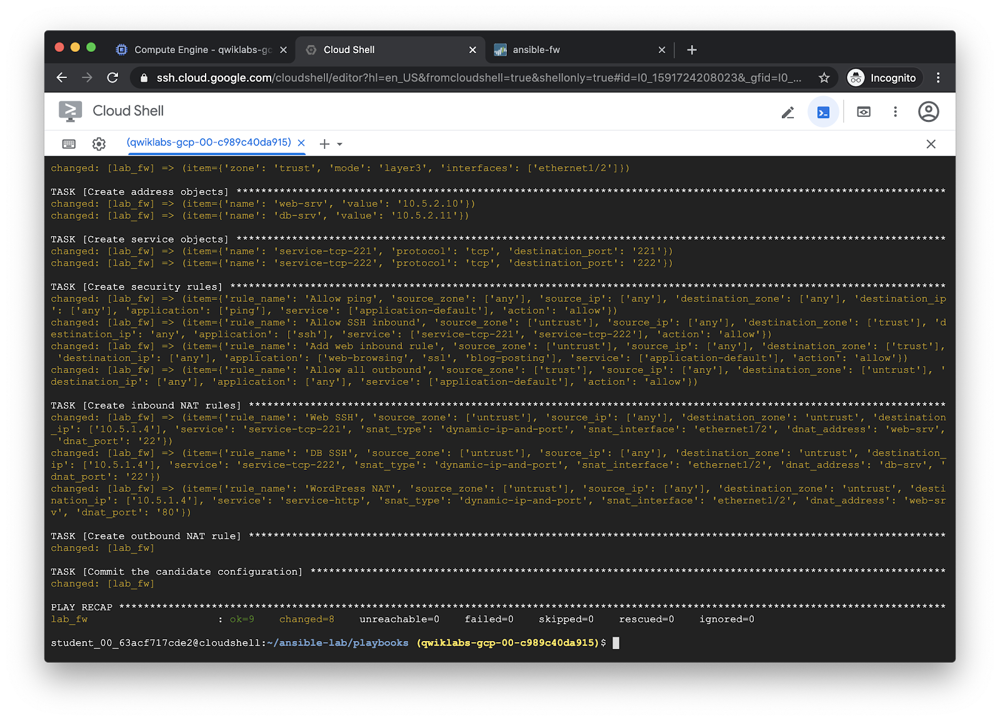

Run the Full Config playbook¶
The full_config.yml playbook will create a full PAN-OS configuration using
several different modules, then commits the configuration. For more
information, see the documentation pages for the modules used:
---
- hosts: lab_fw
connection: local
vars:
device:
ip_address: '{{ ip_address }}'
username: '{{ username | default(omit) }}'
password: '{{ password | default(omit) }}'
api_key: '{{ api_key | default(omit) }}'
interfaces:
- if_name: 'ethernet1/1'
mode: 'layer3'
enable_dhcp: true
create_default_route: true
- if_name: 'ethernet1/2'
mode: 'layer3'
enable_dhcp: true
zones:
- zone: 'untrust'
mode: 'layer3'
interfaces: ['ethernet1/1']
- zone: 'trust'
mode: 'layer3'
interfaces: ['ethernet1/2']
address_objects:
- name: 'web-srv'
value: '10.5.2.10'
- name: 'db-srv'
value: '10.5.2.11'
service_objects:
- name: 'service-tcp-221'
protocol: 'tcp'
destination_port: '221'
- name: 'service-tcp-222'
protocol: 'tcp'
destination_port: '222'
security_rules:
- rule_name: 'Allow ping'
source_zone: ['any']
source_ip: ['any']
destination_zone: ['any']
destination_ip: ['any']
application: ['ping']
service: ['application-default']
action: 'allow'
- rule_name: 'Allow SSH inbound'
source_zone: ['untrust']
source_ip: ['any']
destination_zone: ['trust']
destination_ip: 'any'
application: ['ssh']
service: ['service-tcp-221', 'service-tcp-222']
action: 'allow'
- rule_name: 'Add web inbound rule'
source_zone: ['untrust']
source_ip: ['any']
destination_zone: ['trust']
destination_ip: ['any']
application: ['web-browsing', 'ssl', 'blog-posting']
service: ['application-default']
action: 'allow'
- rule_name: 'Allow all outbound'
source_zone: ['trust']
source_ip: ['any']
destination_zone: ['untrust']
destination_ip: ['any']
application: ['any']
service: ['application-default']
action: 'allow'
inbound_nat_rules:
- rule_name: 'Web SSH'
source_zone: ['untrust']
source_ip: ['any']
destination_zone: 'untrust'
destination_ip: ['10.5.1.4']
service: 'service-tcp-221'
snat_type: 'dynamic-ip-and-port'
snat_interface: 'ethernet1/2'
dnat_address: 'web-srv'
dnat_port: '22'
- rule_name: 'DB SSH'
source_zone: ['untrust']
source_ip: ['any']
destination_zone: 'untrust'
destination_ip: ['10.5.1.4']
service: 'service-tcp-222'
snat_type: 'dynamic-ip-and-port'
snat_interface: 'ethernet1/2'
dnat_address: 'db-srv'
dnat_port: '22'
- rule_name: 'WordPress NAT'
source_zone: ['untrust']
source_ip: ['any']
destination_zone: 'untrust'
destination_ip: ['10.5.1.4']
service: 'service-http'
snat_type: 'dynamic-ip-and-port'
snat_interface: 'ethernet1/2'
dnat_address: 'web-srv'
dnat_port: '80'
vars_files:
- creds.yml
collections:
- paloaltonetworks.panos
tasks:
- name: Configure interfaces
panos_interface:
provider: '{{ device }}'
template: '{{ template | default(omit) }}'
if_name: '{{ item.if_name }}'
mode: '{{ item.mode }}'
enable_dhcp: '{{ item.enable_dhcp }}'
create_default_route: '{{ item.create_default_route | default(omit) }}'
commit: false
with_items: '{{ interfaces }}'
tags: network
- name: Configure zones
panos_zone:
provider: '{{ device }}'
template: '{{ template | default(omit) }}'
zone: '{{ item.zone }}'
mode: '{{ item.mode }}'
interface: '{{ item.interfaces }}'
with_items: '{{ zones }}'
tags: network
- name: Create address objects
panos_address_object:
provider: '{{ device }}'
device_group: '{{ device_group | default(omit) }}'
name: '{{ item.name }}'
value: '{{ item.value }}'
commit: false
with_items: '{{ address_objects }}'
tags: objects
- name: Create service objects
panos_service_object:
provider: '{{ device }}'
device_group: '{{ device_group|default(omit) }}'
name: '{{ item.name }}'
protocol: '{{ item.protocol }}'
destination_port: '{{ item.destination_port }}'
commit: false
with_items: '{{ service_objects }}'
tags: objects
- name: Create security rules
panos_security_rule:
provider: '{{ device }}'
device_group: '{{ device_group | default(omit) }}'
rule_name: '{{ item.rule_name }}'
source_zone: '{{ item.source_zone }}'
source_ip: '{{ item.source_ip }}'
destination_zone: '{{ item.destination_zone }}'
destination_ip: '{{ item.destination_ip }}'
application: '{{ item.application }}'
service: '{{ item.service }}'
action: '{{ item.action }}'
commit: false
with_items: '{{ security_rules }}'
tags: security_rules
- name: Create inbound NAT rules
panos_nat_rule:
provider: '{{ device }}'
device_group: '{{ device_group | default(omit) }}'
rule_name: '{{ item.rule_name }}'
source_zone: '{{ item.source_zone }}'
source_ip: '{{ item.source_ip }}'
destination_zone: '{{ item.destination_zone }}'
destination_ip: '{{ item.destination_ip }}'
service: '{{ item.service }}'
snat_type: '{{ item.snat_type }}'
snat_interface: '{{ item.snat_interface }}'
dnat_address: '{{ item.dnat_address }}'
dnat_port: '{{ item.dnat_port }}'
commit: false
with_items: '{{ inbound_nat_rules }}'
tags: nat_rules
- name: Create outbound NAT rule
panos_nat_rule:
provider: '{{ device }}'
device_group: '{{ device_group | default(omit) }}'
rule_name: 'Outbound NAT'
source_zone: ['trust']
source_ip: ['any']
destination_zone: 'untrust'
destination_ip: ['any']
snat_type: 'dynamic-ip-and-port'
snat_interface: 'ethernet1/1'
commit: false
tags: nat_rules
- name: Commit the candidate configuration
panos_commit:
provider: '{{ device }}'
device_group: '{{ device_group | default(omit) }}'
include_template: '{{ template | default(omit) }}'
tags: commit
Run the playbook with ansible-playbook:
ansible-playbook -i inventory full_config.yml --ask-vault-pass
Output:

